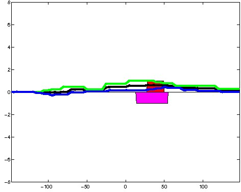
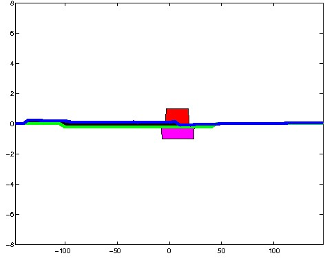
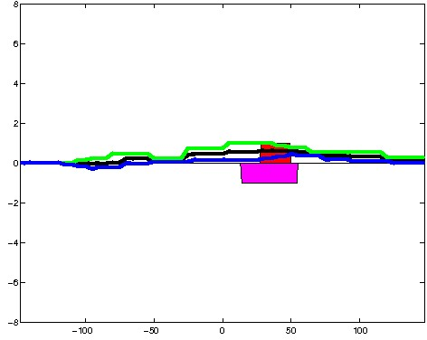
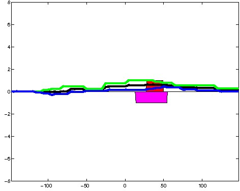
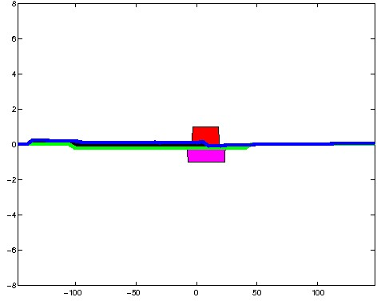
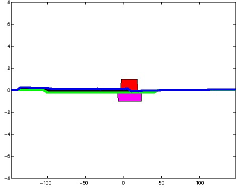

K562 Neither DNase unmatched - State 13:Ctcf (n=55)
K562 Neither DNase unmatched - State 13:Ctcf (n=55)
[
See group descriptions
]


; picked in HepG2 (state 12:CtcfO, DNase); unmatched; chr5:62,697,329-62,697,623 (295bp)")
; picked in Huvec (state 12:CtcfO, DNase); unmatched; chr13:49,117,069-49,117,363 (295bp)")
; picked in Huvec (state 12:CtcfO, DNase); unmatched; chr5:102,376,809-102,377,103 (295bp)")
; picked in Huvec (state 13:Ctcf, DNase); unmatched; chr12:99,349,009-99,349,303 (295bp)")
; picked in H1hesc (state 13:Ctcf, DNase); unmatched; chr4:108,275,489-108,275,783 (295bp)")
; picked in Huvec (state 12:CtcfO, DNase); unmatched; chr19:13,970,429-13,970,723 (295bp)")
; picked in H1hesc (state 12:CtcfO, DNase); unmatched; chr18:30,294,509-30,294,803 (295bp)")
; picked in HepG2 (state 8:EnhW, DNase); unmatched; chr2:86,573,129-86,573,423 (295bp)") 

; picked in HepG2 (state 12:CtcfO, DNase); unmatched; chr2:200,805,209-200,805,503 (295bp)")
; picked in HepG2 (state 13:Ctcf, DNase); unmatched; chr1:74,464,109-74,464,403 (295bp)")
; picked in Huvec (state 12:CtcfO, DNase); unmatched; chr9:118,353,889-118,354,183 (295bp)")
; picked in Huvec (state 13:Ctcf, DNase); unmatched; chr10:112,653,189-112,653,483 (295bp)")
; picked in HepG2 (state 13:Ctcf, DNase); unmatched; chr4:20,546,289-20,546,583 (295bp)")
; picked in Huvec (state 12:CtcfO, DNase); unmatched; chr4:147,837,709-147,838,003 (295bp)")
; picked in HepG2 (state 13:Ctcf, DNase); unmatched; chr4:147,837,669-147,837,963 (295bp)")
; picked in Huvec (state 13:Ctcf, DNase); unmatched; chr4:151,515,169-151,515,463 (295bp)")
; picked in Huvec (state 2:TssF, DNase); unmatched; chr2:197,141,769-197,142,063 (295bp)")
; picked in Huvec (state 12:CtcfO, DNase); unmatched; chr10:98,994,229-98,994,523 (295bp)")
; picked in Huvec (state 12:CtcfO, DNase); unmatched; chr2:217,381,469-217,381,763 (295bp)")
; picked in Huvec (state 13:Ctcf, DNase); unmatched; chrX:54,918,049-54,918,343 (295bp)") 

; picked in HepG2 (state 13:Ctcf, DNase); unmatched; chr6:64,474,269-64,474,563 (295bp)")
; picked in HepG2 (state 13:Ctcf, DNase); unmatched; chr7:117,992,949-117,993,243 (295bp)")
; picked in Huvec (state 13:Ctcf, DNase); unmatched; chr3:17,515,369-17,515,663 (295bp)")